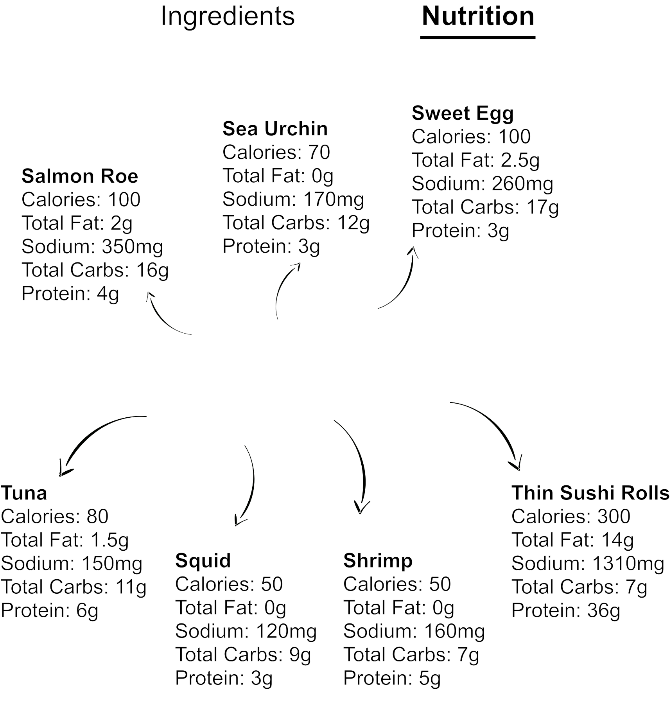

<!DOCTYPE html>
<html>
  <head>
    <title>A-Frame + AR.js</title>
   
    <script src="https://aframe.io/releases/0.6.0/aframe.min.js"></script>
    <script src="https://rawgit.com/jeromeetienne/ar.js/master/aframe/build/aframe-ar.js"></script>
    
    <script>THREEx.ArToolkitContext.baseURL = 'https://rawgit.com/jeromeetienne/ar.js/master/three.js/'</script>
  </head>
  <body>
    
    <a-scene artoolkit="sourceType: webcam;" embedded="embedded">
      <a-assets>
        <a-asset-item id="sushimtl" src="sushimaterials.mtl"></a-asset-item>
        <a-asset-item id="sushiobj" src="sushimodel.obj"></a-asset-item>
        
<!--          -->
      </a-assets>
      <a-obj-model scale = "1 1 1" src="#sushiobj" mtl = "#sushimtl"></a-obj-model>
      <a-plane src="#sushiplatter" height="4" width="4" rotation="0 90 0" position="-0.8 -0.3 0"></a-plane>
<!--       <a-plane src="#sushinutrition" height="2" width="2" rotation="00 90 0" position="0 0 0"></a-plane> -->
      <a-marker-camera preset="hiro"></a-marker-camera>
      
      <a-sky color="black"></a-sky>
    </a-scene>
    
  </body>
</html>
